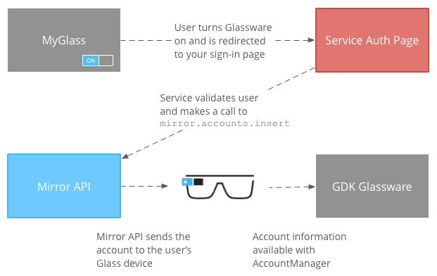

If your GDK Glassware needs to authenticate users against a web service, the GDK provides an API that lets the user enter their credentials when they install your Glassware.
By using this API, you provide a consistent user experience for Glass users and avoid the overhead of implementing your own custom authentication schemes.
Note: Currently, you can only test and use this API after we’ve uploaded your APK to MyGlass, which happens during the review process.
When authentication is set up correctly, your web app’s back end uses the Mirror API to push users’ account information to Glass after they authenticate with your service.
In order to access this API, create a Google API project and then create a client ID for a “service account” (and not a “web application”). By using a service account, users do not have to separately grant your application permission to push their credentials to Glass and won’t be presented with both the OAuth permissions page and your own authentication page again.
To create this account:
When you are ready to submit your Glassware, you will need to provide the following information. This allows us to set up your Glassware to be authenticated correctly when you implement it.
AccountManager APIs on the Glass device)AndroidManifest.xmlThe following diagram shows the basic authentication flow for GDK Glassware:

To implement the authentication flow:
userToken that you need to use later.Warning: Do not store this user token. It is only for use by Google’s authentication endpoints to map the request back to the originated user during that session only and does not contain any information that can be used to persistently identify the user. The token is not guaranteed to be the same if the user authenticates with the same Glassware multiple times or if the user authenticates with different Glassware from the same developer.
mirror.accounts.insert method. This method requires that you specify the https://www.googleapis.com/auth/glass.thirdpartyauth scope when you build your Mirror service object. Examples of making this API call using either raw HTTP or Java are shown in the account creation examples. The parameters and request body that you provide below represent the same information that you would provide to Android’s AccountManager if you were creating the account directly on the device.| Property name | Value | Description |
|---|---|---|
features[] |
list of strings | A list of features (see AccountManager.hasFeatures). |
password |
string | The account password (see AccountManager.getPassword). We recommend that you not store the user’s actual password in this field, but instead use it to store long-lived private data like a refresh token. |
userData[] |
list of objects | One or more pairs of user data associated with the account (see AccountManager.getUserData). |
userData[].key |
string | The key associated with a particular user data key-value pair. |
userData[].value |
string | The value associated with a particular user data key-value pair. |
authTokens[] |
list of objects | One or more auth tokens associated with the account (see AccountManager.getAuthToken). |
authTokens[].type |
string | The type of the auth token. |
authTokens[].authToken |
string | The auth token. |
mirror.account.insert request, the Mirror API pushes the account to the user’s Glass device(s), where you can now access it using the AccountManager class.Follow these guidelines to implement a user-friendly authentication flow:
Note: Install your Glassware at least once through MyGlass to ensure that your authentication flow is successful. As long as you’ve done this once, you can install via sideloading for testing purposes.
To maintain consistency in Glassware authentication, use one of the following authentication flows:
Toggling the Glassware on in MyGlass is all that is required for this flow.
Use the client libraries [TODO: ADD LINK] for the Mirror API when possible. This makes calling mirror.accounts.insert to create the account easier.
The example below only shows the URL of the request and an example of the JSON body that it expects. Making raw HTTP requests on behalf of a service account is much more complicated (see Using OAuth 2.0 for Server to Server Applications for the full details), so we recommend that you use one of our Google API client libraries [TODO: ADD LINK] if possible to make this easier.
Request method and URL:
POST https://www.googleapis.com/mirror/v1/accounts/{userToken}/com.example.myapp/username%40email.com
Request body:
{
"features": ["a", "b", "c"],
"userData": [
{ "key": "realName", "value": "Rusty Shackleford" },
{ "key": "foo", "value": "bar" }
],
"authTokens": [
{ "type": "your_token_type", "authToken": "zT419Ma3X2pBr0L..." }
]
}
Replace {userToken} in the request URL with the token that was passed to your authentication URL in step 1 of Implementing the authentication flow.
This example shows how to use the Java client library to call mirror.accounts.insert
import com.google.api.client.googleapis.auth.oauth2.GoogleCredential;
import com.google.api.client.http.HttpTransport;
import com.google.api.client.http.javanet.NetHttpTransport;
import com.google.api.client.json.JsonFactory;
import com.google.api.client.json.jackson.JacksonFactory;
import com.google.api.services.mirror.Mirror;
import com.google.api.services.mirror.model.Account;
import com.google.api.services.mirror.model.AuthToken;
import com.google.common.collect.Lists;
...
/** Email of the Service Account */
private static final String SERVICE_ACCOUNT_EMAIL =
"<some-id>@developer.gserviceaccount.com";
/** Path to the Service Account's Private Key file */
private static final String SERVICE_ACCOUNT_PKCS12_FILE_PATH =
"/path/to/<public_key_fingerprint>-privatekey.p12";
/** The account type, usually based on your company or app's package. */
private static final String ACCOUNT_TYPE = "com.example.myapp";
/** The Mirror API scopes needed to access the API. */
private static final String MIRROR_ACCOUNT_SCOPES =
"https://www.googleapis.com/auth/glass.thirdpartyauth";
/**
* Build and returns a Mirror service object authorized with the service accounts.
*
* @return Mirror service object that is ready to make requests.
*/
public static Mirror getMirrorService() throws GeneralSecurityException,
IOException, URISyntaxException {
HttpTransport httpTransport = new NetHttpTransport();
JacksonFactory jsonFactory = new JacksonFactory();
GoogleCredential credential = new GoogleCredential.Builder()
.setTransport(httpTransport)
.setJsonFactory(jsonFactory)
.setServiceAccountId(SERVICE_ACCOUNT_EMAIL)
.setServiceAccountScopes(MIRROR_ACCOUNT_SCOPES)
.setServiceAccountPrivateKeyFromP12File(
new java.io.File(SERVICE_ACCOUNT_PKCS12_FILE_PATH))
.build();
Mirror service = new Mirror.Builder(httpTransport, jsonFactory, null)
.setHttpRequestInitializer(credential).build();
return service;
}
/**
* Creates an account and causes it to be synced up with the user's Glass.
* This example only supports one auth token; modify it if you need to add
* more than one, or to add features, user data, or the password field.
*
* @param mirror the service returned by getMirrorService()
* @param userToken the user token sent to your auth callback URL
* @param accountName the account name for this particular user
* @param authTokenType the type of the auth token (chosen by you)
* @param authToken the auth token
*/
public static void createAccount(Mirror mirror, String userToken, String accountName,
String authTokenType, String authToken) {
try {
Account account = new Account();
List<AuthToken> authTokens = Lists.newArrayList(
new AuthToken().setType(authTokenType).setAuthToken(authToken));
account.setAuthTokens(authTokens);
mirror.accounts().insert(
userToken, ACCOUNT_TYPE, accountName, account).execute();
} catch (IOException e) {
e.printStackTrace();
}
}
Retrieving and using Account objects on Glass is similar to using the standard Android AccountManager.
1. Declare the following manifest permissions in your AndroidManifest.xml file:
xml
<uses-permission android:name="android.permission.GET_ACCOUNTS" />
<uses-permission android:name="android.permission.USE_CREDENTIALS" />
2. Retrieve the Glassware’s accounts:
```java
AccountManager accountManager = AccountManager.get(mContext);
// Use your Glassware’s account type.
Account[] accounts = accountManager.getAccountsByType(“com.example”);
// Pick an account from the list of returned accounts.
3. Retrieve an auth token from the `Account`:
java
// Your auth token type.
final String AUTHTOKENTYPE = “oauth2:https://www.example.com/auth/login”;
accountManager.getAuthToken(account, AUTHTOKENTYPE, null, activity, new AccountManagerCallback() { public void run(AccountManagerFuture future) { try { String token = future.getResult().getString(AccountManager.KEY_AUTHTOKEN); // Use the token. } catch (Exception e) { // Handle exception. } } }, null); ```
Portions of this page are reproduced from work created and shared by Google and used according to terms described in the Creative Commons 4.0 Attribution License.